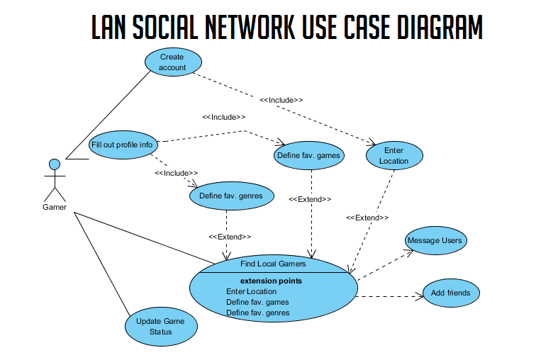

Authentication
Provide step-by-step instructions on how to obtain API keys.
Authentication to use the LAN application is handled with HTTP Basic Authentication. User's logging in are searched by their unique username
and the provided password is hashed and matched with the registered password for that account. Upon successful authentication, a token is then sent
to the user and is passed along with each subsequent request. The token contains a secret key generated and verified by the server.
The token will remain valid until a user logs out or after 12 hours which is the token expiration.
Want to implement LAN's REST API into your own app? Doing so is easy, once you have registered for
a LAN account, you can click the "Developer?" link located at the footer of LAN's website. This will allow you to recieve
JSON formatted data of your messages and newsfeed. After your username and password have been
verified, an API Key will be generarated for you. You will need to provide the key at the end of each of your requests to the LAN API.
Here is an example request to retrieve all of items from your newsfeed with an API Key appended to the end: http://lan/api/v1/newsfeed/API=ETYN4667CVCDF

(Click image to enlarge.) The use case for this project is for gamers to connect with other gamers. They begin by creating an account through the registration screen, which requires email, password, and ZIP code, and then logging in after they are successfully registered. The user will then be prompted to define their favorite games and favorite game genres. This will complete their profile and make it easier to match with other users based on this information. Now, the user can find local gamers by their location and see who they have common games with. They can also message other users and add them as friends. Adding a user as a friend allows for their game updates to display in the users news feed. Another option for the user is to update their game status. They will be able to select what game they are currently playing, write commentary about it, and post it to the common news feed. This update will only be viewable by people on their friends list.
Major Project Testable Requirements
Project Tasks and Project Task Status